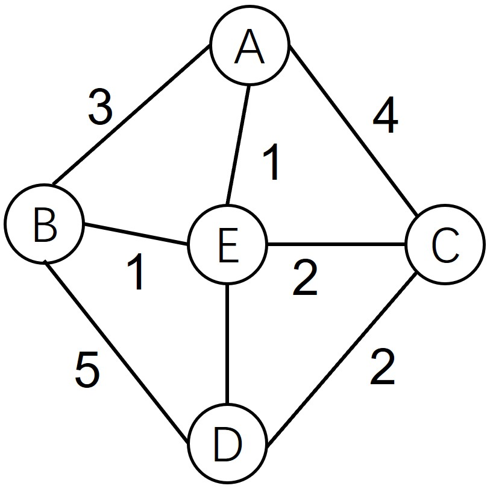

图
- 图的概念
- 图的存储结构
图的概念
图表示了一种多对多的关系，相比线性表的一对一以及树结构的一对多，图的使用范围更广泛结构也更复杂，我们先给出图的定义，再了解图的一些基本术语。
图(Graph)是由一组顶点和一组边的集合构成，记为G=(V,E)， 其中V是vertex，即是顶点，E是edge，即为边。因此，V(G)和E(G)通常分别表示图G的顶点集合和边的集合。一般图有3种要素:
- 顶点：顶点也可以称为节点，是图最基本的部分
- 边：边(也称弧), 连接了两个顶点，表示它们之间存在某种关系，是图的另一个基本部分，但一个图可以只有顶点而没有边。
- 权重： 边可以通过加权的形式表示从一个顶点到另一个顶点的成本

在图的3种要素的基础上衍生了更多相关的概念和划分，
- 边可以是单向的，也可以是双向的，如果图中的边都是单向的，该图称为有向图
- 边如果有权重，可称为带权图，对于未告知权重的图，可以理解为权重皆为1或者相关问题不关注权重
- 路径和路径长度： 路径指的是一个顶点到另一个顶点经过的顶点序列。路径长度指的是一条路径上边或者弧的数目，如果是带权图，则指的是路径上边的权值之和。
- 连通图， 在无向图中，如果任意两个顶点有路径相连，则称为连通图。
图的存储结构
图有两种存储方式，邻接矩阵和邻接表。
邻接矩阵是指用矩阵来表示图，它采用矩阵来描述图中顶点之间的关系，假设图中顶点数为n,则邻接矩阵定义为：
下面是一个简单的有向图和邻接矩阵：
邻接表是图的一种链式表示方法，相对于图来讲，它没有那么直观，但所需要存储的数据更少，更省空间。下图中由于B本身没有指向别的顶点的边，所以邻接表中少了这一项，对于越大型、连接越稀疏的图，这种存储方式在存储方面的优势越大。
小结
习题
- 邻接表除了更方便存储外，你还能想到什么优点？
- 尝试找一张简单的图实现邻接表
打赏
赠人玫瑰，手有余香。您的打赏是我们前进的动力！